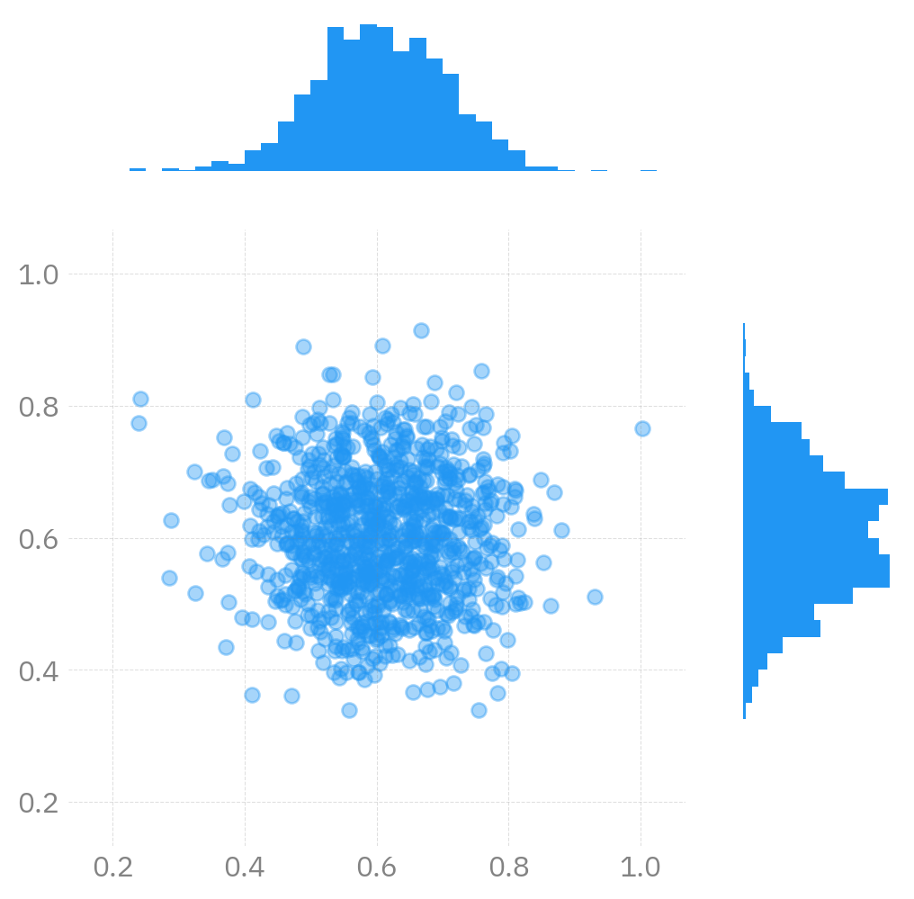

Last Updated: 12/28/2023 @ 19:11:07
ambivalent
2023-12-28
opinionatedambivalent
Clean, simple style for Matplotlib figures.
Transparent backgrounds with grey text that are
{light, dark}-mode independent.
Examples1


More Examples
InferenceData

l2hmc-qcd NotebookRidgeplot

Execution
2D Density
